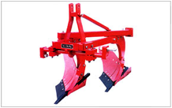

FMP 211 :: Lecture 06 ::PRIMARY TILLAGE - OBJECTIVES, MOULD BOARD PLOUGH , DISC PLOUGH, CHISEL PLOUGH, SUBSOILER , COMPONENTS AND FUNCTIONS, TYPES, ADVANTAGES AND DISADVANTAGES

PRIMARY TILLAGE
The initial major soil working operation designed to plough the soil deeply to reduce soil strength, cover plant materials and rearrange aggregates is called primary tillage.
Objectives of primary tillage
a. To reduce soil strength
b. To rearrange aggregates
c. To cover plant materials and burry weeds
d. To kill insects and pests
The implements used for primary tillage are called as primary tillage implements. They include many animal drawn and tractor drawn implements. Animal drawn implements mostly include indigenous ploughs and mould-board ploughs. Tractor drawn implements include mould-board ploughs, disc ploughs, heavy duty disk harrows, subsoil ploughs, chisel ploughs and other similar implements.
PLOUGH
Chisel Plough (Video) |
Ploughing (Video) |
The main implement used for primary tillage is a plough. Ploughing essentially consists of opening the upper crust of the soil, breaking the clods and making the soil suitable for sowing seeds. The purpose of ploughing can be summarized as follows
- To obtain a deep seed bed of good texture.
- To increase the water holding capacity of the soil.
- To improve soil aeration.
- To destroy weeds and grasses.
- To destroy insects and pests.
- To prevent soil erosion and
- To add fertility to the soil by covering vegetation.
Classification of ploughs according to power used
- Bullock drawn ploughs- indigenous types
ii) Walking type
- Short beam
- Long beam
ii) Riding type
- Tractor drawn ploughs
- mounted type
- Semi mounted type
INDIGENOUS PLOUGH
It is an animal drawn plough. It penetrates into the soil and breaks it open. It forms V shaped furrows with 15-20 cm top width and 12-15 cm depth. It can be used for ploughing in dry land, garden land and wetlands. The size of the plough is represented by the width of the body and the field capacity is around 0.4 ha per day of 8 hours. The functional components include share, body, shoe, handle and beam. Except share all other parts are made up of wood. In villages local artisans make the plough and supply to the farmers. These ploughs are also called as country ploughs
Indigenous plough
Share - It is the working part of the plough attached to the shoe with which it penetrates into the soil and breaks it open.
Shoe - It supports and stabilizes the plough at the required depth.
Body - It is the main part of the plough to which the shoe, beam and handle are attached. In country ploughs both body and shoe are made in a single piece of wood..
Beam - It is a long wooden piece, which connects the main body of the plough to the yoke.
Handle - A wooden piece vertically attached to the body to enable the operator to control the plough while it is working
In each state farmers use indigenous ploughs of their own make.
Operational adjustments
a. Lowering or raising the free end of the beam with respect to the plough body results in an increase or decrease in the share angle with respect to the horizontal surface which in turn increase or decrease the depth of ploughing.
b. Changing the length of the beam between plough body and yoke of the animals will also alter the depth of ploughing. Reducing the beam length will decrease the depth of cut and vice versa.
MOULD BOARD PLOUGH
Mouldboard plough is one of the oldest of all agricultural implements and is generally considered to be the important tillage implement. Ploughing accounts for more traction energy than any other field operation. Mouldboard ploughs are available for animals, power tiller and tractor operation. While working, a mouldboard plough does four jobs namely a) cutting the furrow slice b) lifting the furrow slice c) inverting the furrow slice and d) pulverizing the furrow slice

Two bottom mouldboard plough
Tractor with two bottom mouldboard plough
Land ploughed by a mouldboard plough
COMPONENTS OF A MOULDBOARD PLOUGH
A animal drawn mouldboard plough consists of a) plough bottom b) beam and c) hitch bracket or clevis. A tractor drawn mouldboard plough consists of a) plough bottom b) beam or standard c) main frame and d) hitch frame
a)Plough bottom – The part of the plough which actually cuts, lifts, pulverizes and through the soil out of the furrow. It is composed of those parts necessary for the rigid structure required to cut, lift, turn, and invert the soil. Parts of the mouldboard plough bottom are a) Share b) Mould board c) Land side d) Frog and e) Tail piece. Share, landside, mouldboard are bolted to the frog which is an irregular piece of cast iron.
Components of Mould Board plough
b) Share: It is that part of the plough bottom which penetrates into the soil and makes a horizontal cut below the surface.
c) Mould board: It is the curved part which lifts , turns, and pulverizes the soil slice.
d) Land side: It is the flat plate which presses against the furrow wall and prevents the plough from lateral swinging. The rear part of land side is called heel which slides on the bottom of the furrow
e) Frog: It is the part to which share, land side and mouldboard are attached.
f) Tail piece: It is an adjustable extension, which can be fastened to the rear of the mould board to help in turning the furrow slice.
DETAILS ABOUT DIFFERENT COMPONENTS OF MOULDBOARD PLOUGH
1. Share - It penetrates into the soil and makes a horizontal cut below the soil surface . It is a sharp, well polished and pointed component. Different portions of the share are called by different names such as
- Share point 2) Cutting edge 3) Wing of share 4) Gunnel 5) Cleavage edge and 6) Wing bearing.
Share
- Share point : It is the forward end of the cutting edge which actually penetrates into the soil
- Cutting edge: It is the front edge of the share which makes horizontal cut in the soil. It is beveled to some distance.
- Wing of share: It is the outer end of the cutting edge of the share. It supports the plough bottom
- Gunnel: It is the vertical face of the share which slides along the furrow wall. It takes the side thrust of the soil and supports the plough bottom against the furrow wall .
- Cleavage edge: It is the edge of the share which forms joint between moulboard and share on the frog.
- Wing bearing: It is the level portion of the wing of the share, providing a bearing for the outer corner of the plough bottom.
Material of share: The shares are made of chilled cast iron or steel. The steel mainly contains about 0.70 to 0.80% carbon and about 0.50 to 0.80% manganese besides other minor elements.
2. Types of Shares
Share is of different types such as i) Slip share ii) Slip nose share iii) Shin share and iv) Bar point share.
Types of shares
i) Slip share: It is one piece share with curved cutting edge, having no additional part.
It is a common type of share, mostly used by the farmers. It is simple in design, but it has got the disadvantage that the entire share has to be replaced if it is worn out due to constant use .
ii) Slip nose share: It is a share in which the point of share is provided by a small detachable piece. It has the advantage that the share point can be replaced as and when required. If the point is worn out, it can be changed with a new nose without replacing the entire share, effecting considerable economy.
iii) Shin share: It is the share having a shin as an additional part.
It is similar to the slip share with the difference that an extension is provided to it by the side of the mouldboard.
iv) Bar point share: It is the share in which the point of the share is provided by an adjustable and replaceable iron bar. This bar serves the purpose of share point and land side of the plough.
3. Mouldboard: It is that part of the plough which receives the furrow slice from the share. If lifts, turns and breaks the furrow slice. To suit different soil conditions and crop requirements, mouldboard has been designed in different shapes. The mouldboard is of following types: a) General purpose b) Stubble type c) Sod or Breaker type and d) Slat type.
Types of mould board
a) General purpose: It is a mouldboard having medium curvature lying between stubble and sod types. The mouldboard is fairly long with a gradual twist, the surface being slightly convex. The sloping of the surface is gradual. It turns a well defined furrow slice and pulverizes the soil thoroughly.
b) Stubble type: It is short but broader mouldboard with a relatively abrupt curvature which lifts, breaks and turns the furrow slice. .This is best suited to work in stubble soil that is under cultivation for years together. Stubble soil is that soil in which stubble of the plants from the previous crop is still left on the land at the time of ploughing. This type of mouldboard is not suitable for lands with full of grasses.
c) Sod or Breaker type: It is a long mould board with gentle curvature which lifts and inverts the unbroken furrow slice.. It turns over thickly covered soil. This is very useful where complete inversion of soil is required by the farmer. This type has been designed for used in sod soils (soil with much of grass).
d) Slat type: It is a mouldboard whose surface is made of slats placed along the length of the mouldboard, so that there are gaps between the slats. This type of mouldboard is often used, where the soil is sticky, because the solid mouldboard does not scour well in sticky soils.
4) Land side: It is the flat plate which presses against and transmits lateral thrust of the plough bottom to the furrow wall (Fig.6 ). It helps to resist the side pressure exerted by the furrow slice on the mouldboard. It also helps in stabilizing the plough while in operations. Land side is fastened to the frog with the help of plough bolts. The rear bottom end of the land side is known as heel which rubs against the furrow sole.
Mould board bottom
5) Frog: Frog is that part of the plough bottom to which the other components of the plough bottom are attached. It is an irregular piece of metal. It is made of cast iron for cast iron ploughs or it may be welded steel for steel ploughs.
6) Tail piece: It is an important extension of mouldboard which helps in turning a furrow slice.
PLOUGH ACCESSORIES
There are a few accessories necessary for efficient function of the plough. They are (i) Jointer (ii) Coulter (iii) Gauge wheel (iv) Land wheel and (v) Furrow wheel.
a) Jointer
It is a small irregular piece of metal having a shape similar to an ordinary plough bottom. It looks like a miniature plough. Its purpose is to turn over a small ribbon like furrow slice directly in front of the main plough bottom. This small furrow slice is cut from the left and upper side of the main furrow slice and is inverted so that all trashes on the top of the soil are completely turned down and buried under the right hand corner of the furrow.
b) Coulter
It is a device used to cut the furrow slice vertically from the land ahead of the plough bottom. It cuts the furrow slice from the land and leaves a clear wall. It also cuts trashes which are covered under the soil by the plough. The coulter may be (a) Rolling type disc coulter or (b) Sliding type knife coulter.
Rolling type disc coulter
It is a round steel disk which has been sharpened on the edge and suspended on a shank and yoke from the beam. The edge of the coulter may be either smooth or notched. It is so fitted that it can be adjusted up-down and side ways. The up-down adjustment takes care of depth and sideways adjustment is meant for taking care of width of cut.
Sliding type knife coulter
It is a stationary knife fixed downward in a vertical position on the beam. The knife does not roll over the ground but slides on the ground. The knife may be of different shapes and sizes.
c) Gauge wheel
It is an auxiliary wheel of an implement to maintain an uniform depth of working.
Gauge wheel helps to maintain uniformity in respect of depth of ploughing in different soil conditions. It is usually placed in hanging position.
d) Land wheel - It is the wheel of the plough which runs on the ploughed land.
e) Front furrow wheel - It is the front wheel of the plough which runs in the furrow.
f) Rear furrow wheel - It is the rear wheel of the plough which runs in the furrow.
ADJUSTMENT OF MOULDBOARD PLOUGH
For proper penetration and efficient work by the mouldboard plough, some adjustments are made from time to trime. They are (i) Vertical suction and (ii) Horizontal suction.
a) Vertical suction (Vertical clearance)
It is the maximum clearance under the land side and the horizontal surface when the plough is resting on a horizontal surface in the working position. It is also defined as the vertical distance from the ground, measured at the joining point of share and land side. (Fig.7a). It helps the plough to penetrate into the soil to a proper depth. This clearance varies according to the size of the plough.
Vertical clearance horizontal clearances
b) Horizontal suction (Horizontal clearance)
It is the maximum clearance between the land side and the furrow wall. This suction helps the plough to cut the proper width of furrow slice. This clearance also varies according to the size of the plough. It is also known as side clearance.
c) Throat clearance
It is the perpendicular distance between share point and lower position of the beam of the plough .
Throat clearance of plough
TYPES OF MOULDBOARD PLOUGHS
- Fixed type (one way) mouldboard plough
One way plough throws the furrow slice to one side of the direction of travel and is commonly used everywhere. It may be long beam type or short beam type
2) Two-way or Reversible plough
It is a mouldboard plough which turns furrow slice to the right or left side of direction of travel as required. Such ploughs have two sets of opposed bottoms. In such a plough, all furrows can be turned towards the same side of the field by using one bottom for one direction of travel and the other bottom on the return trip. Two sets of bottom are so mounted that they can be raised or lowered independently or rotated along an axis. Two way ploughs have the advantage that they neither upset the slope of the land nor leave dead furrows or back furrows in the middle of the field.
3) Turn wrest plough
There are some reversible ploughs which have single bottom with an arrangement that the plough bottom is changed from right hand to left hand or vice versa by rotating the bottom through approximately 180° about a longitudinal axis. This type of plough is called turn wrest plough . While moving in one direction, the plough throws the soil in one direction and at the return trip the direction of the plough bottom is changed, thus the plough starts throwing the soil in the same direction as before.

Turn wrest plough
OTHER TERMS CONNECTED WITH PLOUGHS
a) Vertical clevis
It is a vertical plate with a number of holes and fitted at the end of the beam. By using the clevis depth of operation and line of pull are adjusted

Clevis and line of pull
| Download this lecture as PDF here |